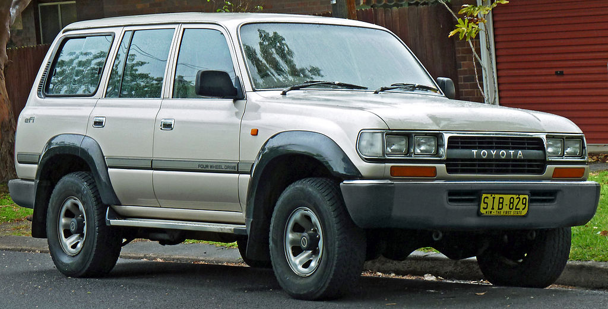

The Land Cruiser 80 series was unveiled in October 1989 at the Tokyo Motor Show and launched in early 1990. It had swing-out back doors, which were replaced by a tailgate and hatch in 1994. The Land Cruiser was nicknamed the Burbuja (Bubble) in Colombia and Venezuela due to its roundness. The J80 was initially offered in two versions in these countries: the fully loaded VX

and an entry level model that included a vinyl interior with ptional air conditioning. In 1996, the entry model was upgraded to a medium equipped model named Autana, including cloth upholstery, standard air conditioning and power driver seat. The name is a reference to the Tepui mesa Autana, a spectacular plateau and cave system along the Guiana Shield craton. Land Cruiser sales reached 2 million vehicles.
In January 1998, the 100 series Land Cruiser was introduced to replace the 8-year-old 80 series. The 100 series was previewed in October 1997 as the "Grand Cruiser" at the 32nd Tokyo Motor Show. Development began in 1991 under code name 404T, with the final design being frozen in mid-1994.[43][44]

There are two distinct versions of the 100-series, the 100 and the 105. The two versions look very similar, but there are significant differences under the bodywork. Despite these differences and official model names, both the 100 and 105 are collectively known as the 100 series.
In 2002, a 5-year development plan on a successor to the 100-series platform commenced under Sadayoshi Koyari and Tetsuya Tada. By 2004, 1 0 years after the design selection of its predecessor in 1994, a final production design was settled on for the 2008 J200. Prototype related tests were conducted for over 2 years between 2004 and early 2007.

The redesigned Toyota Land Cruiser was introduced in late 2007. Known as the 200 Series, it shares the Lexus LX 570's platform and overall design. The frame was new, derived from the second-generation Tundra[citation needed] but shortened and strengthened by 20 percent. Bigger brake rotors and calipers were added and the front suspension was strengthened. The underbelly is also protected by skid plates. The roof pillars were redesigned to better protect occupants in a rollover.
he J300 series Land Cruiser was unveiled on 9 June 2021.[71] Its development was led by Toyota chief engineer Takami Yokoo.[74] Built on the body-on-frame GA-F platform, the frame itself was redesigned to reduce weight and increase rigidity. The total weight of the vehicle was reduced by 200 kg (441 lb) compared to its predecessor. Other improvements claimed include lowered center of gravity, weight distribution, and an improved suspension structure.